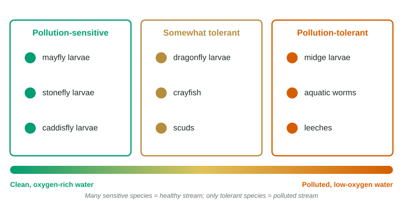

Human Impacts on Ecosystems
Pollution changes ecosystems by pushing conditions outside species' tolerance ranges.
Part 1 · Hook
Why this matters
Part 2 · Before you start
What this builds on
Part 3 · Prerequisite check
Quick check before you start
1. Which organisms live in a coral's tissues and make food by photosynthesis?
- Algae
- Fish
- Sponges
- Sea stars
Show the answer
Algae inside the coral make food by photosynthesis and share it with the coral.
- Correct: Algae:
- Fish:
- Sponges:
- Sea stars:
2. What happens to an organism in its zone of physiological stress?
- It survives but is stressed and may not reproduce
- It grows fastest
- It is unaffected
- It becomes a keystone species
Show the answer
Outside its optimal range, an organism is stressed and does worse.
- Correct: It survives but is stressed and may not reproduce:
- It grows fastest:
- It is unaffected:
- It becomes a keystone species:
Part 4 · See it
See it first

Part 5 · Step by step
How it works, step by step
- People add pollutants, heat, sediment, oil or plastic to waterconditions move outside the tolerance range of sensitive species
- Sensitive species die or leave, and tolerant species remain or increasethe community changes, which indicator species reveal
- On reefs, heat stress makes corals expel their algaecorals bleach, starve and may die, and reef species lose habitat
- Oil coats animals and plastics are eatenanimals lose insulation, are poisoned, or starve with full stomachs
Part 6 · Key ideas
Key ideas
- Species differ in their range of tolerance. Indicator species such as mayfly, stonefly and caddisfly larvae disappear when water quality falls; midges and worms tolerate pollution.
- Coral bleaching: heat stress (and pollution) makes corals expel their algae, so they turn white and may starve. Sediment blocks light and smothers reefs.
- Oil spills coat feathers and fur, poison animals and smother shorelines. Cleanup uses booms, skimmers and, with care, dispersants.
- Ocean plastics entangle animals and are eaten; they break into microplastics that enter food webs and carry toxic chemicals.
Part 7 · Misconception
A common mistake
The wrong idea: A bleached coral has been bleached by chemicals in the water.
What actually happens: Bleaching means the coral has expelled its algae, usually because of heat stress. The white is the coral's skeleton showing through clear tissue.
Part 8 · Check yourself
Check yourself
Exam-style questions. Anything you miss goes into your review queue.
1. What is an indicator species?
- A species whose numbers reveal the health of its environment
- A species that has more effect on its community than its numbers suggest
- The first species to colonize bare rock
- A species that eats a wide range of foods
Show the answer
An indicator species is one whose presence, absence or health reveals the condition of its environment, such as mayfly larvae for clean, oxygen-rich streams.
- Correct: A species whose numbers reveal the health of its environment: Right: its presence or absence signals conditions.
- A species that has more effect on its community than its numbers suggest: That describes a keystone species.
- The first species to colonize bare rock: That describes a pioneer species.
- A species that eats a wide range of foods: That describes a generalist species.
Data
Stream insects above and below a wastewater discharge pipe
| Site | Dissolved oxygen (mg/L) | Mayfly and stonefly larvae | Midge larvae and aquatic worms |
|---|---|---|---|
| 1: upstream of pipe | 9.5 | 48 | 6 |
| 2: just below pipe | 4.0 | 2 | 70 |
| 3: 2 km below | 6.5 | 15 | 35 |
| 4: 6 km below | 9.0 | 40 | 9 |
2. How does the number of mayfly and stonefly larvae change downstream of the pipe?
- They rise just below the pipe, then fall farther down
- They crash below the pipe, then recover
- They stay about the same from site to site
- They fall at each site and do not recover
Show the answer
They drop from 48 upstream to 2 just below the pipe, then recover to 15 at 2 km and 40 at 6 km as the water improves.
- They rise just below the pipe, then fall farther down: They fall just below the pipe, from 48 to 2.
- Correct: They crash below the pipe, then recover: Right: 48, then 2, then 15, then 40.
- They stay about the same from site to site: They range from 2 to 48.
- They fall at each site and do not recover: They recover to 40 at 6 km.
3. Why are mayflies and stoneflies useful as indicator species here?
- They need clean water, so they track its quality
- They thrive in polluted water, so they show where pollution is
- They eat the pollutants, so they clean the stream
- They are the largest insects, so they are easy to count
Show the answer
They need clean, oxygen-rich water, so their numbers rise and fall with water quality. Their crash at site 2 signals pollution; midges and worms, which tolerate low oxygen, increase there.
- Correct: They need clean water, so they track its quality: Right: their numbers follow dissolved oxygen closely.
- They thrive in polluted water, so they show where pollution is: They do the opposite; tolerant midges and worms thrive there.
- They eat the pollutants, so they clean the stream: They do not clean the stream; their numbers just reflect its quality.
- They are the largest insects, so they are easy to count: Size is not what makes an indicator species useful.
4. Find the percent change in mayfly and stonefly larvae from site 1 to site 2.
Type a number, then its unit (%). Scale words (2.5 million) and powers of ten (2.5 × 10^6) are read.
Show the answer
- Answer: -95.83 %
Model or diagram
Coral cover and summer water temperature on a reef
5. What happens to live coral cover in the years with the highest summer temperatures?
- It rises in the hottest years
- It drops the most in the coolest years
- It drops sharply in the hottest years
- It stays the same whatever the temperature
Show the answer
In 2016 and 2020, the two hottest summers, coral cover drops sharply (42 to 28, and 27 to 19 percent). In cooler years it changes little.
- It rises in the hottest years: Cover falls, not rises, in 2016 and 2020.
- It drops the most in the coolest years: The coolest years show the smallest changes.
- Correct: It drops sharply in the hottest years: Right: the biggest drops come in 2016 and 2020.
- It stays the same whatever the temperature: It falls from 45 to 18 percent.
6. Which process explains the link between hot summers and coral loss?
- Warm water dissolves the coral skeleton directly
- Heat makes corals expel the algae that feed them
- Hot water brings more algae, which smother the coral
- Warm water carries more oxygen, which poisons coral
Show the answer
Heat stress makes corals expel the algae that live in their tissues and feed them by photosynthesis. The corals turn white (bleach), and if the heat lasts they starve and die.
- Warm water dissolves the coral skeleton directly: The main effect of heat is losing the algae, not dissolving the skeleton.
- Correct: Heat makes corals expel the algae that feed them: Right: that is coral bleaching.
- Hot water brings more algae, which smother the coral: Bleaching is the loss of the algae living inside the coral.
- Warm water carries more oxygen, which poisons coral: Warm water holds less oxygen, not more.
7. Where do most microplastics in the ocean come from?
- Natural rock weathered into tiny plastic grains
- Larger plastic broken up by sun and waves
- Plankton that build plastic shells
- Oil spills that harden into beads on the seafloor
Show the answer
Most microplastics are pieces of larger plastic broken down by sunlight and waves, plus fibers shed from synthetic clothing and small beads from some products.
- Natural rock weathered into tiny plastic grains: Plastic is made by people; rocks do not weather into plastic.
- Correct: Larger plastic broken up by sun and waves: Right: big plastic becomes many small pieces.
- Plankton that build plastic shells: No plankton make plastic.
- Oil spills that harden into beads on the seafloor: Spilled oil does not turn into plastic beads.
Part 9 · Summary
Summary
Part 10 · Up next
What comes next
Part 11 · Connections